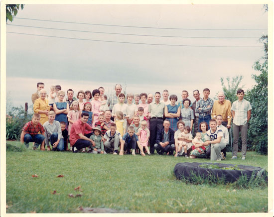

|
Allen Family Documents and Photos |

From left at back:
Tommy Elledge, Minnie Allen, Doug Elledge (child), Lois Elledge, Jewell Allen Ray, Huey
Provence, Frances Allen Provence, Rose Reeves, (Kenneth's wife), Virginia Allen holding Donna Allen
(Marion's daughter), Kenneth Reeves, Harold Beckett, Barbara Allen,
Flora Allen Beckett, Ruth Allen, Shirley Allen, Carl Allen, Marion Allen, Howard
Allen, Janie Parr, Frank Parr, Dora Evans, Sam Evans, Mike Reeves, Ernest Allen,
Dale Allen, (Harold's son).
From left front row:
Wesley Parr, Gary Provence, Perry Ray, Brenda Provence
and Chaelee (Rachel) Ray (both standing), Dean Ray in front of girls, Shawn Ray,
Rex Allen, (Harold's son), Harold Allen, Preston Allen, (Harold's son) in front of Harold,
Cindy Reeves (Kenneth's daughter), Wade Parr, Clarence Allen, David Reeves, (Kenneth's
son), Cindy Reeves, (Kenneth's daughter), Jude Reeves, Trella Reeves, Ronda Reeves (Ronnie's
daughter), Mary Lou Reeves, (Ronnie's wife holding son Bruce), Justin Allen,
(Harold's son), Ronnie
Reeves.